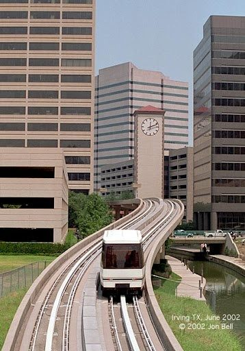
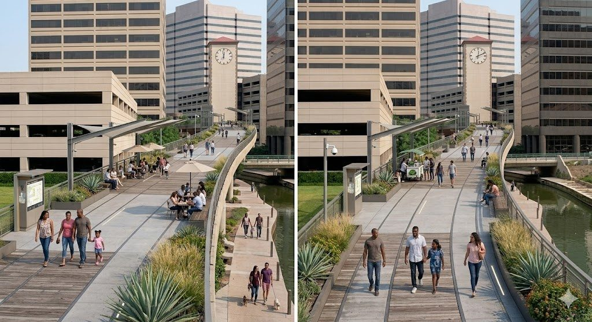
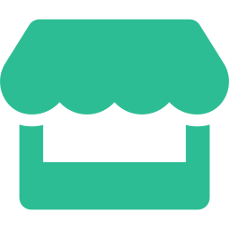
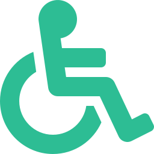
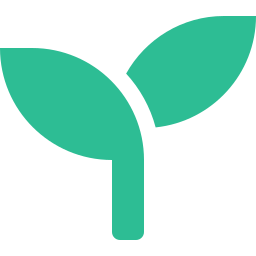
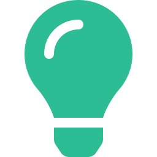

Design concept
Designed for a Texas summer
Native, heat-tolerant xeriscaping and sustainable timber decking make a cooler stretch of walkway in the middle of the Urban Center.


Low-water landscapeAgave, yucca, Texas sage
Integrated lightingLED-embedded floor systems
Thermal bufferTimber decking cuts heat-island effect
Deck width12–16 ft path on the dual-lane guideway
Activation elements

Thermal shade
Modular tensile canopies against 100°F+ heat, so the space works 365 days a year.

Micro-kiosks
Prefabricated vendor pods at station platforms that bring in lease revenue and weekend foot traffic.

ADA ingress
Lift towers and ramps built into existing office plazas for full accessibility.

Suspended shade
Tensile fabric structures that block the sun and still let the breeze through.

Xeriscaping
Native sage, agave and yucca, which need very little water and handle the heat.

Illumination
Integrated LED floor lighting for round-the-clock safety and evening atmosphere along the canal.